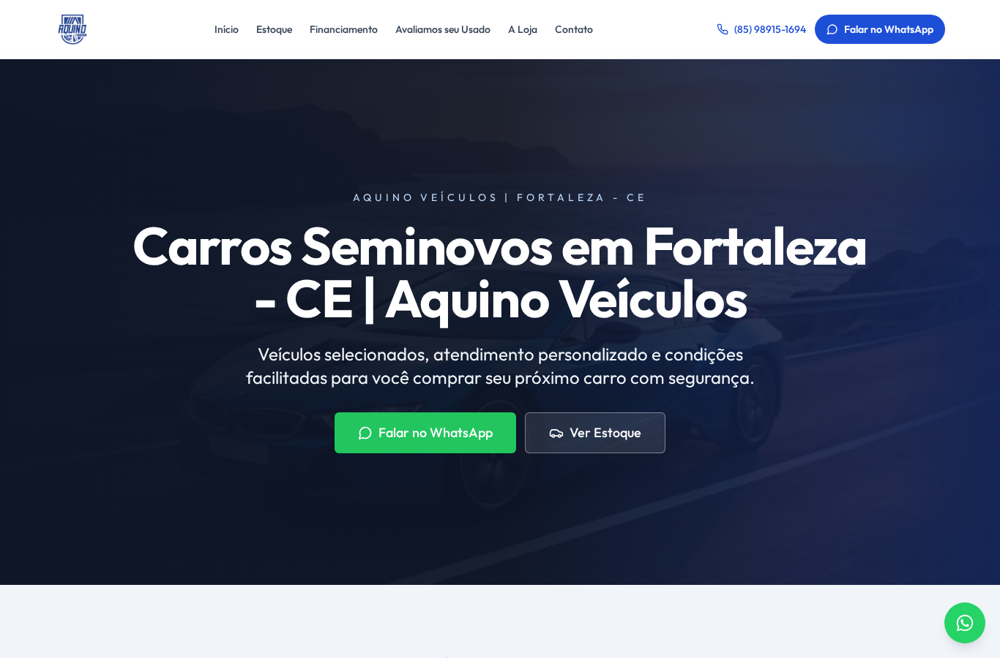
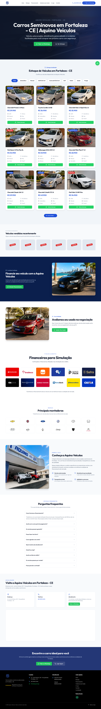

Sistema de Investigação de Marca e Identidade Online
https://www.aquinoveiculos.com.br/
Prioridade: MEDIUM · Cenário: B_AMBIGUOUS_COMMUNICATION · Revisão humana: PENDING
A página corresponde a uma revenda de veículos que exibe o logotipo atual do Banco BV de maneira secundária e contextualizada dentro de uma grade multibancos de parceiros para simulação de financiamento. Não há tentativa de se passar pelo banco nem overbranding, predominando a marca da própria loja. No entanto, a ausência de CNPJ no rodapé e a falta de esclarecimento formal da condição de correspondente bancário ou de ouvidoria conforme a Resolução CMN nº 4.935/2021 caracterizam o vínculo como ambíguo, justificando a classificação como REVIEW_REQUIRED com prioridade MEDIUM. [Revisor: CONFIRM] A página pertence a uma revenda física de seminovos (Aquino Veículos, em Fortaleza/CE). O logotipo do Banco BV é exibido dentro de uma seção multibancos ('Financeiras para Simulação') ao lado de outras 11 instituições financeiras, sem caracterizar overbranding ou usurpação de identidade do banco. Todavia, a revenda atua na captação/simulação de financiamento via WhatsApp sem apresentar CNPJ, razão social, esclarecimento formal da condição de correspondente bancário ou canal de ouvidoria (Resolução CMN nº 4.935/2021). A classificação de parceria ambígua (REVIEW_REQUIRED, MEDIUM) é precisa e deve ser confirmada.


| Ref | Tipo | Local | Conteúdo |
|---|---|---|---|
| E-URL | domain | url | URL final: https://www.aquinoveiculos.com.br/ (domínio: www.aquinoveiculos.com.br) |
| E-COLLECT | network | collection | Status da coleta: OK; HTTP 200; ocorrências: network did not become idle (continuing) |
| E-DISC-001 | text | search_index | Índice de busca (grounding): aquinoveiculos.com.br — Abaixo estão listadas **12 páginas públicas distintas de revendas de seminovos e lojas multimarcas** encontradas a partir das buscas parametrizadas | **URL:** `https://www.aquinoveiculos.com.br` | **Como utiliza a marca:** Insere com destaque visual o **Logotipo oficial do Banco BV** em sua seção *"Financie seu veículo com a Aquino Veículos"*, atrelando a marca à simulação e pré-análise direta via WhatsApp | **Conformidade (CNPJ / Correspondente):** O site faz uso visual ostensivo do logotipo do banco, porém **omite CNPJ, razão social e qualquer menção à qualidade de correspondente** nos termos da regulamentação do Banco Central |
| E-SHOT-VIEWPORT | screenshot | viewport | evidence/C7661d57029/attempt-1/viewport.png (sha256 7be370de4714ab0e…) |
| E-SHOT-FULL | screenshot | page | evidence/C7661d57029/attempt-1/fullpage.png (sha256 80876e9e0776ae98…) |
| E-TITLE | title | head | Aquino Veículos | Carros Seminovos em Fortaleza - CE |
| E-META-1 | meta | head | description: Aquino Veículos em Fortaleza-CE. Encontre carros seminovos e usados com qualidade, procedência e atendimento especializado. |
| E-META-2 | meta | head | og:site_name: Aquino Veículos |
| E-META-3 | meta | head | og:title: Aquino Veículos | Carros Seminovos em Fortaleza - CE |
| E-META-4 | meta | head | og:description: Aquino Veículos em Fortaleza-CE. Encontre carros seminovos e usados com qualidade, procedência e atendimento especializado. |
| E-CANONICAL | meta | head | https://www.aquinoveiculos.com.br/ |
| E-HEAD-1 | heading | page | Carros Seminovos em Fortaleza - CE | Aquino Veículos |
| E-HEAD-2 | heading | page | Estoque de Veículos em Fortaleza - CE |
| E-HEAD-3 | heading | page | Chevrolet Prisma 1.4 Maxx |
| E-HEAD-4 | heading | page | Toyota Corolla 1.8 XEI |
| E-HEAD-5 | heading | page | Chevrolet Onix 1.0 Spe/4 Eco Lt |
| E-HEAD-6 | heading | page | Fiat Siena 1.0 Fire Flex EL |
| E-HEAD-7 | heading | page | Volkswagen GOL GVII 1.0 |
| E-HEAD-8 | heading | page | Chevrolet Ônix Plus LT 1.0 |
| E-HEAD-9 | heading | page | Chevrolet Classic Life 1.0 |
| E-HEAD-10 | heading | page | Chevrolet Cobalt LTZ 1.8 |
| E-HEAD-11 | heading | page | Fiat Palio 1.0 MPI Fire |
| E-HEAD-12 | heading | page | Veículos vendidos recentemente |
| E-HEAD-13 | heading | page | Financie seu veículo com a Aquino Veículos |
| E-HEAD-14 | heading | page | Avaliamos seu usado na negociação |
| E-HEAD-15 | heading | page | Financeiras para Simulação |
| E-HDR | text | header | Início Estoque Financiamento Avaliamos seu Usado A Loja Contato (85) 98915-1694 Falar no WhatsApp |
| E-FOLD | text | viewport (acima da dobra) | Início Estoque Financiamento Avaliamos seu Usado A Loja Contato (85) 98915-1694 Falar no WhatsApp Aquino Veículos | Fortaleza - CE Carros Seminovos em Fortaleza - CE | Aquino Veículos Veículos selecionados, atendimento personalizado e condições facilitadas para você comprar seu próximo carro com segurança. Falar no WhatsApp Ver Estoque Estoque atualizado |
| E-FTR | text | footer | Carros usados e seminovos selecionados em Fortaleza - CE. ★★★★★ Atendimento com foco em confiança e transparência Contato Av. Jovita Feitosa, 529 - Parquelândia Fortaleza - CE (85) 98915-1694 WhatsApp da loja Atendimento Segunda a Sexta 08:00 às 18:00 Sábado 08:00 às 14:00 Links rápidos Início Estoque Financiamento Avaliamos seu Usado A Loja Contato Localização Redes Sociais © 2026 Aquino Veículos. Todos os direitos reservados. Voltar ao topo |
| E-NAV | nav | header | <https://www.aquinoveiculos.com.br/#home> | Início <https://www.aquinoveiculos.com.br/#home> | Estoque <https://www.aquinoveiculos.com.br/#estoque> | Financiamento <https://www.aquinoveiculos.com.br/#financiamento> | Avaliamos seu Usado <https://www.aquinoveiculos.com.br/#avaliamos> | A Loja <https://www.aquinoveiculos.com.br/#loja> | Contato <https://www.aquinoveiculos.com.br/#contato> | (85) 98915-1694 <tel:85989151694> | Falar no WhatsApp <https://wa.me/5585989151694?text=Ol%C3%A1%2C%20Aquino%20Ve%C3%ADculos!%20Vim%20atrav%C3%A9s%20do%20site%20e%20gostaria%20de%20mais%20informa%C3%A7%C3%B5es%20sobre%20os%20ve%C3%ADculos%20dispon%C3%ADveis.> |
| E-CTA-1 | cta | page | Todos |
| E-CTA-2 | cta | page | Automático |
| E-CTA-3 | cta | page | Manual |
| E-CTA-4 | cta | page | Até R$ 60 mil |
| E-CTA-5 | cta | page | Acima de R$ 60 mil |
| E-CTA-6 | cta | page | SUV |
| E-CTA-7 | cta | page | Hatch |
| E-CTA-8 | cta | page | Sedan |
| E-CTA-9 | cta | page | Picape |
| E-CTA-10 | cta | page | Ver mais veículos → |
| E-CTA-11 | cta | page | VENDIDO |
| E-CTA-12 | cta | page | VENDIDO |
| E-CTA-13 | cta | page | VENDIDO |
| E-CTA-14 | cta | page | VENDIDO |
| E-CTA-15 | cta | page | VENDIDO |
| E-CTA-16 | cta | page | VENDIDO |
| E-CTA-17 | cta | page | VENDIDO |
| E-CTA-18 | cta | page | VENDIDO |
| E-CTA-19 | cta | page | VENDIDO |
| E-CTA-20 | cta | page | VENDIDO |
| E-CONTACT-1 | contact | header | (85) 98915-1694 <tel:85989151694> |
| E-CONTACT-2 | contact | header | Falar no WhatsApp <https://wa.me/5585989151694?text=Ol%C3%A1%2C%20Aquino%20Ve%C3%ADculos!%20Vim%20atrav%C3%A9s%20do%20site%20e%20gostaria%20de%20mais%20informa%C3%A7%C3%B5es%20sobre%20os%20ve%C3%ADculos%20dispon%C3%ADveis.> |
| E-CONTACT-3 | contact | page | Falar no WhatsApp <https://wa.me/5585989151694?text=Ol%C3%A1%2C%20Aquino%20Ve%C3%ADculos!%20Vim%20atrav%C3%A9s%20do%20site%20e%20gostaria%20de%20mais%20informa%C3%A7%C3%B5es%20sobre%20os%20ve%C3%ADculos%20dispon%C3%ADveis.> |
| E-CONTACT-4 | contact | page | Tenho Interesse <https://wa.me/5585989151694?text=Ol%C3%A1!%20Tenho%20interesse%20no%20ve%C3%ADculo%20abaixo%3A%0A%0A%F0%9F%9A%97%20Chevrolet%20Prisma%201.4%20Maxx%0A%F0%9F%93%85%20Ano%3A%202011%0A%F0%9F%9A%97%20Quilometragem%3A%20135%20km%0A%E2%9A%99%EF%B8%8F%20C%C3%A2mbio%3A%20Manual%0A%E2%9B%BD%20Combust%C3%ADvel%3A%20Flex%0A%F0%9F%8E%A8%20Cor%3A%20Prata%0A%F0%9F%92%B0%20Pre%C3%A7o%3A%20R%24%2029.900%0A%0AVi%20este%20ve%C3%ADculo%20no%20site%20da%20Aquino%20Ve%C3%ADculos%20e%20gostaria%20de%20mais%20informa%C3%A7%C3%B5es.> |
| E-CONTACT-5 | contact | page | Tenho Interesse <https://wa.me/5585989151694?text=Ol%C3%A1!%20Tenho%20interesse%20no%20ve%C3%ADculo%20abaixo%3A%0A%0A%F0%9F%9A%97%20Toyota%20Corolla%201.8%20XEI%0A%F0%9F%93%85%20Ano%3A%202004%0A%F0%9F%9A%97%20Quilometragem%3A%20130.000%20km%0A%E2%9A%99%EF%B8%8F%20C%C3%A2mbio%3A%20Autom%C3%A1tico%0A%E2%9B%BD%20Combust%C3%ADvel%3A%20Gasolina%0A%F0%9F%8E%A8%20Cor%3A%20Prata%0A%F0%9F%92%B0%20Pre%C3%A7o%3A%20R%24%2036.900%0A%0AVi%20este%20ve%C3%ADculo%20no%20site%20da%20Aquino%20Ve%C3%ADculos%20e%20gostaria%20de%20mais%20informa%C3%A7%C3%B5es.> |
| E-CONTACT-6 | contact | page | Tenho Interesse <https://wa.me/5585989151694?text=Ol%C3%A1!%20Tenho%20interesse%20no%20ve%C3%ADculo%20abaixo%3A%0A%0A%F0%9F%9A%97%20Chevrolet%20Onix%201.0%20Spe%2F4%20Eco%20Lt%0A%F0%9F%93%85%20Ano%3A%202019%0A%F0%9F%9A%97%20Quilometragem%3A%20156.000%20km%0A%E2%9A%99%EF%B8%8F%20C%C3%A2mbio%3A%20Manual%0A%E2%9B%BD%20Combust%C3%ADvel%3A%20Flex%0A%F0%9F%8E%A8%20Cor%3A%20Branco%0A%F0%9F%92%B0%20Pre%C3%A7o%3A%20R%24%2055.900%0A%0AVi%20este%20ve%C3%ADculo%20no%20site%20da%20Aquino%20Ve%C3%ADculos%20e%20gostaria%20de%20mais%20informa%C3%A7%C3%B5es.> |
| E-CONTACT-7 | contact | page | Tenho Interesse <https://wa.me/5585989151694?text=Ol%C3%A1!%20Tenho%20interesse%20no%20ve%C3%ADculo%20abaixo%3A%0A%0A%F0%9F%9A%97%20Fiat%20Siena%201.0%20Fire%20Flex%20EL%0A%F0%9F%93%85%20Ano%3A%202014%0A%F0%9F%9A%97%20Quilometragem%3A%20143.000%20km%0A%E2%9A%99%EF%B8%8F%20C%C3%A2mbio%3A%20Manual%0A%E2%9B%BD%20Combust%C3%ADvel%3A%20Flex%0A%F0%9F%8E%A8%20Cor%3A%20Cinza%0A%F0%9F%92%B0%20Pre%C3%A7o%3A%20R%24%2034.900%0A%0AVi%20este%20ve%C3%ADculo%20no%20site%20da%20Aquino%20Ve%C3%ADculos%20e%20gostaria%20de%20mais%20informa%C3%A7%C3%B5es.> |
| E-CONTACT-8 | contact | page | Tenho Interesse <https://wa.me/5585989151694?text=Ol%C3%A1!%20Tenho%20interesse%20no%20ve%C3%ADculo%20abaixo%3A%0A%0A%F0%9F%9A%97%20Volkswagen%20GOL%20GVII%201.0%0A%F0%9F%93%85%20Ano%3A%202023%0A%F0%9F%9A%97%20Quilometragem%3A%20100.000%20km%0A%E2%9A%99%EF%B8%8F%20C%C3%A2mbio%3A%20Manual%0A%E2%9B%BD%20Combust%C3%ADvel%3A%20Flex%0A%F0%9F%8E%A8%20Cor%3A%20Branco%0A%F0%9F%92%B0%20Pre%C3%A7o%3A%20R%24%2053.900%0A%0AVi%20este%20ve%C3%ADculo%20no%20site%20da%20Aquino%20Ve%C3%ADculos%20e%20gostaria%20de%20mais%20informa%C3%A7%C3%B5es.> |
| E-CONTACT-9 | contact | page | Tenho Interesse <https://wa.me/5585989151694?text=Ol%C3%A1!%20Tenho%20interesse%20no%20ve%C3%ADculo%20abaixo%3A%0A%0A%F0%9F%9A%97%20Chevrolet%20%C3%94nix%20Plus%20LT%201.0%0A%F0%9F%93%85%20Ano%3A%202023%0A%F0%9F%9A%97%20Quilometragem%3A%2034.000%20km%0A%E2%9A%99%EF%B8%8F%20C%C3%A2mbio%3A%20Manual%0A%E2%9B%BD%20Combust%C3%ADvel%3A%20Flex%0A%F0%9F%8E%A8%20Cor%3A%20Vermelho%0A%F0%9F%92%B0%20Pre%C3%A7o%3A%20R%24%2068.900%0A%0AVi%20este%20ve%C3%ADculo%20no%20site%20da%20Aquino%20Ve%C3%ADculos%20e%20gostaria%20de%20mais%20informa%C3%A7%C3%B5es.> |
| E-CONTACT-10 | contact | page | Tenho Interesse <https://wa.me/5585989151694?text=Ol%C3%A1!%20Tenho%20interesse%20no%20ve%C3%ADculo%20abaixo%3A%0A%0A%F0%9F%9A%97%20Chevrolet%20Classic%20Life%201.0%0A%F0%9F%93%85%20Ano%3A%202014%0A%F0%9F%9A%97%20Quilometragem%3A%20145.000%20km%0A%E2%9A%99%EF%B8%8F%20C%C3%A2mbio%3A%20Manual%0A%E2%9B%BD%20Combust%C3%ADvel%3A%20Flex%0A%F0%9F%8E%A8%20Cor%3A%20Bege%0A%F0%9F%92%B0%20Pre%C3%A7o%3A%20R%24%2029.900%0A%0AVi%20este%20ve%C3%ADculo%20no%20site%20da%20Aquino%20Ve%C3%ADculos%20e%20gostaria%20de%20mais%20informa%C3%A7%C3%B5es.> |
| E-CONTACT-11 | contact | page | Tenho Interesse <https://wa.me/5585989151694?text=Ol%C3%A1!%20Tenho%20interesse%20no%20ve%C3%ADculo%20abaixo%3A%0A%0A%F0%9F%9A%97%20Chevrolet%20Cobalt%20LTZ%201.8%0A%F0%9F%93%85%20Ano%3A%202015%0A%F0%9F%9A%97%20Quilometragem%3A%20170.000%20km%0A%E2%9A%99%EF%B8%8F%20C%C3%A2mbio%3A%20Autom%C3%A1tico%0A%E2%9B%BD%20Combust%C3%ADvel%3A%20Flex%0A%F0%9F%8E%A8%20Cor%3A%20Prata%0A%F0%9F%92%B0%20Pre%C3%A7o%3A%20R%24%2043.900%0A%0AVi%20este%20ve%C3%ADculo%20no%20site%20da%20Aquino%20Ve%C3%ADculos%20e%20gostaria%20de%20mais%20informa%C3%A7%C3%B5es.> |
| E-CONTACT-12 | contact | page | Tenho Interesse <https://wa.me/5585989151694?text=Ol%C3%A1!%20Tenho%20interesse%20no%20ve%C3%ADculo%20abaixo%3A%0A%0A%F0%9F%9A%97%20Fiat%20Palio%201.0%20MPI%20Fire%0A%F0%9F%93%85%20Ano%3A%202016%0A%F0%9F%9A%97%20Quilometragem%3A%20120.218%20km%0A%E2%9A%99%EF%B8%8F%20C%C3%A2mbio%3A%20Manual%0A%E2%9B%BD%20Combust%C3%ADvel%3A%20Gasolina%0A%F0%9F%8E%A8%20Cor%3A%20Branco%0A%F0%9F%92%B0%20Pre%C3%A7o%3A%20R%24%2034.900%0A%0AVi%20este%20ve%C3%ADculo%20no%20site%20da%20Aquino%20Ve%C3%ADculos%20e%20gostaria%20de%20mais%20informa%C3%A7%C3%B5es.> |
| E-CONTACT-13 | contact | page | Simular Financiamento <https://wa.me/5585989151694?text=Ol%C3%A1%2C%20Aquino%20Ve%C3%ADculos!%20Vim%20atrav%C3%A9s%20do%20site%20e%20gostaria%20de%20fazer%20uma%20simula%C3%A7%C3%A3o%20de%20financiamento.> |
| E-CONTACT-14 | contact | page | Avaliar Meu Usado <https://wa.me/5585989151694?text=Ol%C3%A1%2C%20Aquino%20Ve%C3%ADculos!%20Gostaria%20de%20avaliar%20meu%20ve%C3%ADculo%20na%20troca.> |
| E-CONTACT-15 | contact | page | (85) 98915-1694 <tel:85989151694> |
| E-CONTACT-16 | contact | page | Falar no WhatsApp <https://wa.me/5585989151694?text=Ol%C3%A1%2C%20Aquino%20Ve%C3%ADculos!%20Vim%20atrav%C3%A9s%20do%20site%20e%20gostaria%20de%20mais%20informa%C3%A7%C3%B5es%20sobre%20os%20ve%C3%ADculos%20dispon%C3%ADveis.> |
| E-CONTACT-17 | contact | page | Falar no WhatsApp <https://wa.me/5585989151694?text=Ol%C3%A1%2C%20Aquino%20Ve%C3%ADculos!%20Vim%20atrav%C3%A9s%20do%20site%20e%20gostaria%20de%20mais%20informa%C3%A7%C3%B5es%20sobre%20os%20ve%C3%ADculos%20dispon%C3%ADveis.> |
| E-CONTACT-18 | contact | page | Ligar Agora <tel:85989151694> |
| E-CONTACT-19 | contact | footer | (85) 98915-1694 <tel:85989151694> |
| E-CONTACT-20 | contact | footer | WhatsApp da loja <https://wa.me/5585989151694?text=Ol%C3%A1%2C%20Aquino%20Ve%C3%ADculos!%20Vim%20atrav%C3%A9s%20do%20site%20e%20gostaria%20de%20mais%20informa%C3%A7%C3%B5es%20sobre%20os%20ve%C3%ADculos%20dispon%C3%ADveis.> |
| E-IMG-1 | image | header (acima da dobra) | imagem alt='Aquino Veículos' src=https://www.aquinoveiculos.com.br/images/aquino-veiculos-logo.png (48x48, acima da dobra) |
| E-IMG-2 | image | page | imagem alt='Logotipo do Banco Santander, instituição financeira para simulação de financiamento de veículos na Aquino Veículos em Fortaleza, CE' src=https://www.aquinoveiculos.com.br/images/santander-aquino-veiculos-fortaleza-ce.png (181x118, abaixo da dobra) |
| E-IMG-3 | image | page | imagem alt='Logotipo do Bradesco, instituição financeira para simulação de financiamento de veículos na Aquino Veículos em Fortaleza, CE' src=https://www.aquinoveiculos.com.br/images/bradesco-aquino-veiculos-fortaleza-ce.png (181x118, abaixo da dobra) |
| E-IMG-4 | image | page | imagem alt='Logotipo do Banco Itaú, instituição financeira para simulação de financiamento de veículos na Aquino Veículos em Fortaleza, CE' src=https://www.aquinoveiculos.com.br/images/itau-aquino-veiculos-fortaleza-ce.png (181x118, abaixo da dobra) |
| E-IMG-5 | image | page | imagem alt='Logo Banco BV | Financiamento de veículos em Fortaleza - CE' src=https://www.aquinoveiculos.com.br/images/banco-bv-aquino-veiculos-fortaleza-ce.png (181x118, abaixo da dobra) |
| E-IMG-6 | image | page | imagem alt='Logotipo do Banco PAN, instituição financeira para simulação de financiamento de veículos na Aquino Veículos em Fortaleza, CE' src=https://www.aquinoveiculos.com.br/images/banco-pan-aquino-veiculos-fortaleza-ce.png (181x118, abaixo da dobra) |
| E-IMG-7 | image | page | imagem alt='Logotipo do Banco Safra, instituição financeira para simulação de financiamento de veículos na Aquino Veículos em Fortaleza, CE' src=https://www.aquinoveiculos.com.br/images/banco-safra-aquino-veiculos-fortaleza-ce.png (181x118, abaixo da dobra) |
| E-IMG-8 | image | page | imagem alt='Logotipo do C6 Bank, instituição financeira para simulação de financiamento de veículos na Aquino Veículos em Fortaleza, CE' src=https://www.aquinoveiculos.com.br/images/c6-bank-aquino-veiculos-fortaleza-ce.png (181x118, abaixo da dobra) |
| E-IMG-9 | image | page | imagem alt='Logotipo do Banco Daycoval, instituição financeira para simulação de financiamento de veículos na Aquino Veículos em Fortaleza, CE' src=https://www.aquinoveiculos.com.br/images/banco-daycoval-aquino-veiculos-fortaleza-ce.png (181x118, abaixo da dobra) |
| E-IMG-10 | image | page | imagem alt='Logotipo do Banco Toyota, instituição financeira para simulação de financiamento de veículos na Aquino Veículos em Fortaleza, CE' src=https://www.aquinoveiculos.com.br/images/banco-toyota-aquino-veiculos-fortaleza-ce.png (181x118, abaixo da dobra) |
| E-IMG-11 | image | page | imagem alt='Logotipo do Porto Bank, instituição financeira para simulação de financiamento de veículos na Aquino Veículos em Fortaleza, CE' src=https://www.aquinoveiculos.com.br/images/porto-bank-aquino-veiculos-fortaleza-ce.png (181x118, abaixo da dobra) |
| E-IMG-12 | image | page | imagem alt='Logotipo do Banco do Brasil, instituição financeira para simulação de financiamento de veículos na Aquino Veículos em Fortaleza, CE' src=https://www.aquinoveiculos.com.br/images/banco-do-brasil-aquino-veiculos-fortaleza-ce.png (181x118, abaixo da dobra) |
| E-IMG-13 | image | page | imagem alt='Logotipo da Caixa Econômica Federal, instituição financeira para simulação de financiamento de veículos na Aquino Veículos em Fortaleza, CE' src=https://www.aquinoveiculos.com.br/images/caixa-economica-federeal-veiculos-fortaleza-ce.png (181x118, abaixo da dobra) |
| E-IMG-14 | image | page | imagem alt='Logotipo da Chevrolet, marca de veículos apresentada pela Aquino Veículos em Fortaleza, CE' src=https://www.aquinoveiculos.com.br/images/logo-chevrolet-aquino-veiculos-fortaleza-ce.png (100x48, abaixo da dobra) |
| E-IMG-15 | image | page | imagem alt='Logotipo da Fiat, marca de veículos apresentada pela Aquino Veículos em Fortaleza, CE' src=https://www.aquinoveiculos.com.br/images/logo-fiat-aquino-veiculos-fortaleza-ce.png (100x48, abaixo da dobra) |
| E-IMG-16 | image | page | imagem alt='Logotipo da Ford, marca de veículos apresentada pela Aquino Veículos em Fortaleza, CE' src=https://www.aquinoveiculos.com.br/images/logo-ford-aquino-veiculos-fortaleza-ce.png (100x48, abaixo da dobra) |
| E-IMG-17 | image | page | imagem alt='Logotipo da Volkswagen, marca de veículos apresentada pela Aquino Veículos em Fortaleza, CE' src=https://www.aquinoveiculos.com.br/images/logo-volkswagen-aquino-veiculos-fortaleza-ce.png (100x48, abaixo da dobra) |
| E-IMG-18 | image | page | imagem alt='Logotipo da Toyota, marca de veículos apresentada pela Aquino Veículos em Fortaleza, CE' src=https://www.aquinoveiculos.com.br/images/toyota-aquino-veiculos-fortaleza-ce.png (100x48, abaixo da dobra) |
| E-IMG-19 | image | page | imagem alt='Logotipo da Honda, marca de veículos apresentada pela Aquino Veículos em Fortaleza, CE' src=https://www.aquinoveiculos.com.br/images/logo-honda-aquino-veiculos-fortaleza-ce.png (100x48, abaixo da dobra) |
| E-IMG-20 | image | page | imagem alt='Logotipo da Hyundai, marca de veículos apresentada pela Aquino Veículos em Fortaleza, CE' src=https://www.aquinoveiculos.com.br/images/logo-hyundai-aquino-veiculos-fortaleza-ce.png (100x48, abaixo da dobra) |
| E-TXT-001 | text | page | Falar no WhatsApp |
| E-TXT-002 | text | page | Veículos selecionados, atendimento personalizado e condições facilitadas para você comprar seu próximo carro com segurança. |
| E-TXT-003 | text | page | Falar no WhatsApp |
| E-TXT-004 | text | page | Conte com atendimento personalizado para encontrar as melhores condições de financiamento para o seu perfil. |
| E-TXT-005 | text | page | A Aquino Veículos é uma loja especializada em carros usados e seminovos em Fortaleza - CE, com foco em atendimento personalizado, transparência e veículos de qualidade. |
| E-TXT-006 | text | page | Nossa missão é oferecer a melhor experiência na compra do seu veículo, com atendimento honesto, veículos revisados e as melhores condições de financiamento do mercado. |
| E-TXT-007 | text | page | Atendimento personalizado |
| E-TXT-008 | text | page | Qual o horário de atendimento? |
| E-TXT-009 | text | page | Endereço |
| E-TXT-010 | text | page | Telefone |
| E-TXT-011 | text | page | Atendimento |
| E-TXT-012 | text | page | Tire dúvidas, consulte disponibilidade e simule seu financiamento pelo WhatsApp. |
| E-TXT-013 | text | page | Falar no WhatsApp |
| E-TXT-014 | text | page | Falar no WhatsApp |
| E-TXT-015 | text | page | Atendimento com foco em confiança e transparência |
| E-TXT-016 | text | page | WhatsApp da loja |
| E-TXT-017 | text | page | Atendimento |
| Dimensão | Sinal | Achado | Refs |
|---|---|---|---|
| VISUAL_IDENTITY | LEGITIMATE | Identidade visual própria da loja Aquino Veículos é amplamente predominante em toda a extensão da página. | E-SHOT-VIEWPORT E-SHOT-FULL |
| DECLARED_COMMERCIAL_IDENTITY | CONFUSION | Embora o nome comercial e endereço físico estejam informados, não há CNPJ nem razão social identificáveis no conteúdo coletado. | E-FTR E-TXT-009 |
| CORRESPONDENT_TRANSPARENCY | CONFUSION | Não há menção formal à atuação como correspondente bancário independente, nem identificação das responsabilidades ou canais de ouvidoria. | E-HEAD-15 E-FTR |
| INSTITUTIONAL_LANGUAGE | LEGITIMATE | O texto é redigido na perspectiva exclusiva de uma revenda de veículos multimarcas, sem pretensão de se passar pelo banco. | E-HEAD-13 E-TXT-005 E-TXT-006 |
| LOGO_USAGE | NEUTRAL | Uso do logotipo atual do Banco BV de forma proporcional, integrado a uma lista com outras 11 instituições financeiras na seção 'Financeiras para Simulação'. | E-HEAD-15 E-IMG-5 E-SHOT-FULL |
| SERVICE_JOURNEY | LEGITIMATE | A jornada de atendimento direciona para o WhatsApp comercial da própria revenda de veículos para simulação e compra. | E-CONTACT-13 E-NAV |
| CONTACT_CHANNELS | LEGITIMATE | Canais de contato (telefones e WhatsApp com DDD 85 de Fortaleza) pertencem à loja Aquino Veículos. | E-CONTACT-1 E-FTR |
| CONSUMER_CONFUSION | NEUTRAL | Risco moderado de ambiguidade quanto à natureza da parceria financeira em razão da falta de declarações regulatórias e de CNPJ. | E-HEAD-15 E-FTR |
A página corresponde a uma revenda de veículos que exibe o logotipo atual do Banco BV de maneira secundária e contextualizada dentro de uma grade multibancos de parceiros para simulação de financiamento. Não há tentativa de se passar pelo banco nem overbranding, predominando a marca da própria loja. No entanto, a ausência de CNPJ no rodapé e a falta de esclarecimento formal da condição de correspondente bancário ou de ouvidoria conforme a Resolução CMN nº 4.935/2021 caracterizam o vínculo como ambíguo, justificando a classificação como REVIEW_REQUIRED com prioridade MEDIUM.
Nenhum CNPJ ou razão social identificáveis no conteúdo coletado.
| Tipo | Valor | Ref | Contexto |
|---|---|---|---|
| domain | aquinoveiculos.com.br | E-URL | |
| trade_name | Aquino Veículos | E-META-2 | |
| phone | (85) 98915-1694 | E-HDR | |
| phone | 85989151694 | E-NAV | |
| Índice de busca (grounding): aquinoveiculos.com.br — Abaixo estão listadas **12 páginas públicas distintas de revendas de seminovos e lojas multimarcas** encontradas a partir das buscas parametrizadas | E-DISC-001 | ||
| Falar no WhatsApp <https://wa.me/5585989151694?text=Ol%C3%A1%2C%20Aquino%20Ve%C3%ADculos!%20Vim%20atrav%C3%A9s%20do%20site%20e%20gostaria%20de%20mais%20informa%C3%A7%C3%B5es%20sobre%20os%20ve%C3%ADcul | E-CONTACT-2 | ||
| Tenho Interesse <https://wa.me/5585989151694?text=Ol%C3%A1!%20Tenho%20interesse%20no%20ve%C3%ADculo%20abaixo%3A%0A%0A%F0%9F%9A%97%20Chevrolet%20Prisma%201.4%20Maxx%0A%F0%9F%93%85%20Ano%3A%202011%0A%F0 | E-CONTACT-4 | ||
| Tenho Interesse <https://wa.me/5585989151694?text=Ol%C3%A1!%20Tenho%20interesse%20no%20ve%C3%ADculo%20abaixo%3A%0A%0A%F0%9F%9A%97%20Toyota%20Corolla%201.8%20XEI%0A%F0%9F%93%85%20Ano%3A%202004%0A%F0%9F | E-CONTACT-5 |
Mapeamento indicativo para apoio à auditoria. Não constitui conclusão regulatória; a decisão definitiva pertence à auditoria.
Fonte: NORMATIVE
Art. 14. O contrato de correspondente deve estabelecer: [...] II - vedação à utilização, pelo contratado, de logomarca ou de outros atributos que sejam similares aos adotados pela instituição contratante em suas agências, postos de atendimento, sítio eletrônico na internet, aplicativo ou outras plataformas de comunicação em rede;
Evidência observada: E-SHOT-FULL E-SHOT-VIEWPORT
Fonte: NORMATIVE
Art. 14. O contrato de correspondente deve estabelecer: [...] III - divulgação ao público, pelo contratado, de sua condição de prestador de serviços à instituição contratante, identificada pelo nome com que é conhecida no mercado, com descrição dos produtos e serviços oferecidos e canais de contato da instituição contratante, inclusive de sua ouvidoria, em local visível, em destaque e em formato legível, por meio de: a) sítio eletrônico do correspondente na internet, acessível na página inicial; b) aplicativo e outras plataformas de comunicação em rede do correspondente; [...]
Hipótese: Divulgação ao público da condição de prestador de serviços/parceria ausente, insuficiente, ambígua ou sem destaque. A norma disciplina correspondentes contratados; o responsável não foi identificado como correspondente.
Evidência observada: E-FTR E-HEAD-15 E-SHOT-FULL E-TXT-009
Informação faltante:
Fonte: NORMATIVE
Art. 3º O correspondente atua por conta e sob as diretrizes da instituição contratante, que assume inteira responsabilidade pelo atendimento prestado aos clientes e usuários por meio do contratado.
Evidência observada: E-CONTACT-1 E-CONTACT-13 E-FTR E-NAV
Se o responsável não for correspondente contratado, os indícios podem caracterizar uso indevido de marca ou fraude, fora do escopo da Res. 4.935: avaliar encaminhamento às áreas jurídica/segurança.
Limitações: requisitos contratuais/internos não fornecidos: mapeamento limitado ao texto normativo
Decisão: CONFIRM → REVIEW_REQUIRED / MEDIUM
A página pertence a uma revenda física de seminovos (Aquino Veículos, em Fortaleza/CE). O logotipo do Banco BV é exibido dentro de uma seção multibancos ('Financeiras para Simulação') ao lado de outras 11 instituições financeiras, sem caracterizar overbranding ou usurpação de identidade do banco. Todavia, a revenda atua na captação/simulação de financiamento via WhatsApp sem apresentar CNPJ, razão social, esclarecimento formal da condição de correspondente bancário ou canal de ouvidoria (Resolução CMN nº 4.935/2021). A classificação de parceria ambígua (REVIEW_REQUIRED, MEDIUM) é precisa e deve ser confirmada.
| Tema | Severidade | Questionamento | Refs |
|---|---|---|---|
| domain_attribution | MEDIUM | Responsável pela página não identificado; a conclusão sobre a marca não pode ser atribuída a um estabelecimento específico. | E-URL |
| Fonte | Consulta / hipótese | URL original | Título / trecho |
|---|---|---|---|
| grounding | Objetivo: Revendas de seminovos e lojas multimarcas que divulgam financiamento da marca.
Execute no Google Search as seguintes consultas (dorks):
- "Banco BV" financiamento (loja OR revenda OR seminovos OR multimarcas) veículos -site:bv.com.br -site:bancobv.com.br -site:bvfinanceira.com.br -site:bvinvestimentos.com.br -site:napista.com.br -site:bvopen.com.br -site:meufinanciamentosolar.com.br -site:votorantim.com.br -site:vam.com.br -site:reclameaqui.com.br -site:jusbrasil.com.br -site:jus.br
- "bv financeira" (seminovos OR multimarcas OR revenda) financiamento -site:bv.com.br -site:bancobv.com.br -site:bvfinanceira.com.br -site:bvinvestimentos.com.br -site:napista.com.br -site:bvopen.com.br -site:meufinanciamentosolar.com.br -site:votorantim.com.br -site:vam.com.br -site:reclameaqui.com.br -site:jusbrasil.com.br -site:jus.br
- ("financiamos" OR "trabalhamos com" OR "financie") ("bv financeira" OR "Banco BV") veículos -site:bv.com.br -site:bancobv.com.br -site:bvfinanceira.com.br -site:bvinvestimentos.com.br -site:napista.com.br -site:bvopen.com.br -site:meufinanciamentosolar.com.br -site:votorantim.com.br -site:vam.com.br -site:reclameaqui.com.br -site:jusbrasil.com.br -site:jus.br
Liste de forma abrangente as páginas públicas encontradas (até 12 resultados distintos), informando para cada uma o nome do estabelecimento/perfil, a URL e como a marca é utilizada (destaque visual, título, feirão, simulador, redes sociais e se há ou não identificação clara de CNPJ e condição de correspondente bancário). H2-product:financiamento de carro e multimarcas | https://www.aquinoveiculos.com.br/ | aquinoveiculos.com.br Abaixo estão listadas **12 páginas públicas distintas de revendas de seminovos e lojas multimarcas** encontradas a partir das buscas parametrizadas | **URL:** `https://www.aquinoveiculos.com.br` | **Como utiliza a marca:** Insere com destaque visual o **Logotipo oficial do Banco BV** em sua seção *"Financie seu veículo com a Aquino Veículos"*, atrelando a marca à simulação e pré-análise direta via WhatsApp | **Conformidade (CNPJ / Correspondente):** O site faz uso visual ostensivo do logotipo do banco, porém **omite CNPJ, razão social e qualquer menção à qualidade de correspondente** nos termos da regulamentação do Banco Central |
Original: https://www.aquinoveiculos.com.br/
Final: https://www.aquinoveiculos.com.br/
| Artefato | Caminho | SHA-256 | Bytes |
|---|---|---|---|
| screenshot_viewport | evidence/C7661d57029/attempt-1/viewport.png | 7be370de4714ab0eebcf5204e592a01bedd567b9db3d62920f8b88e5ed6f2be2 | 579958 |
| screenshot_full | evidence/C7661d57029/attempt-1/fullpage.png | 80876e9e0776ae98880032dc228c22e1cec83fc24f7c50cd87cd027116b86739 | 4077428 |
| html | evidence/C7661d57029/attempt-1/page.html.txt | 944e1bff2be25fe41d8a2c39d5a0e8ac3ac5a269bcfd8fc89cd94f83525da9af | 126421 |
| text | evidence/C7661d57029/attempt-1/text.txt | e5834ef15f125f20a7f4c4b9b1f7295dabfb06ff73f4fdb516f1c40cc5408310 | 4866 |
| page_data | evidence/C7661d57029/attempt-1/page.json | 9f8d2283933d8240dbe1fa5e6804a432292cc13427f543d9b142323eceb779bb | 47760 |
| Quando | De | Para | Nota |
|---|---|---|---|
| 2026-11-25T15:36:32+00:00 | DISCOVERED | QUEUED | prioritised (score 2.5) |
| 2026-11-25T15:38:46+00:00 | QUEUED | COLLECTING | |
| 2026-11-25T15:38:57+00:00 | COLLECTING | COLLECTED | |
| 2026-11-25T15:38:57+00:00 | COLLECTED | ANALYZING | |
| 2026-11-25T15:41:20+00:00 | ANALYZING | REVIEWING | |
| 2026-11-25T15:41:27+00:00 | REVIEWING | COMPLETED |